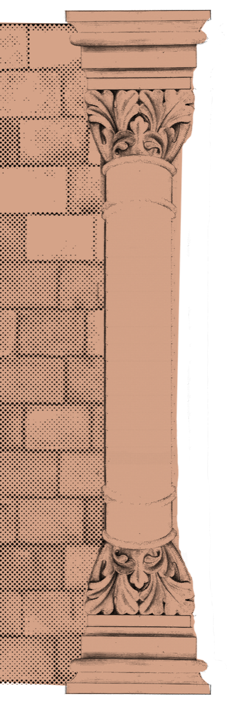
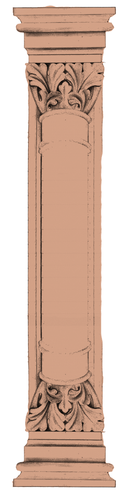

STORIES. STORIES. STORIES. STORIES. STORIES. STORIES. STORIES. STORIES. STORIES. STORIES. STORIES. STORIES.
Explore stories from the archive through primary information, compiled by your fellow archivists.




ADD YOUR STORY +
Loading...
Loading story...